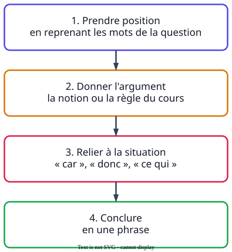

Ce que demandent les sujets
- « Argumenter le choix de l'employeur. »
- « Sélectionner la mesure qui vous semble la plus efficace. Argumenter ce choix. »
La méthode

À retenir
- Obligation de sécurité de l'employeur
- l'employeur prend les mesures nécessaires pour assurer la sécurité et protéger la santé physique et mentale des travailleurs (Code du travail, article L. 4121-1).
- Responsabilité pénale
- responsabilité qui vise à sanctionner une infraction prévue par la loi.
- Les arguments qui reviennent
- la priorité de la protection collective, l'action à la source, l'obligation de sécurité, la réduction des accidents et des maladies professionnelles, le coût humain et financier.
- Les connecteurs
- car, en effet, donc, c'est pourquoi, ainsi, alors que.
Un exemple de bac
« Sélectionner la mesure de prévention qui vous semble la plus efficace pour éviter le risque biologique. Argumenter ce choix. »
Sujet 2023, Antilles-Guyane
InsuffisantJe choisis les gants car c'est mieux.
MaîtriséJe choisis de mécaniser le vidage des bacs. En effet, c'est une mesure de protection collective : elle agit à la source et protège tous les éboueurs, alors que les gants ne protègent que celui qui les porte. Elle est donc prioritaire.
L'argument mobilise une notion du cours, la priorité de la protection collective, et la relie à la situation.